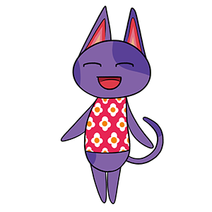

This is a basic page I've organized to showcase my projects a bit more. By context, I assume you likely want to see some of my code, and/or some highlights of them in action. I plan to cover: -Bob -This page -Soundboard -Information on private projects (design team work kept private to protect from tampering/piracy)
Here's a cool image of Bob, the companion from my resume. He's happy to meet you! This is one of many PNGs used for his actual code. I am working with CelestiaKnight to obtain all the visuals, menu boxes, scroll bars, etc. so that Bob looks his best when I officially release him!
Assuming you've read my resume/LinkedIn, you've likely seen the basic concept of what I hope to accomplish with him. But I'll restate it with some technical information, for completion's sake.I'd like to make a note for those who've seen the project dates on my resume and LinkedIn--though this project was time-consuming, it wasn't difficult enough to consume three years. Here is a general development timeline of when things happened:
I wanted to ensure that I was transparent about the time frames. I take my projects seriously, and did not want to give the impression that it took three years in total to reach this level of progress.
Downloading executables from 2002 on a site in a different language is mildly intimidating to those with common computing sense--especially on a work computer. Therefore, I plan to release Bob as an app once I have finished his first SSP release. Details to follow soon!
Thank you for scrolling this far! I hope you've enjoyed what you've seen here, on either a technical or humorous basis.